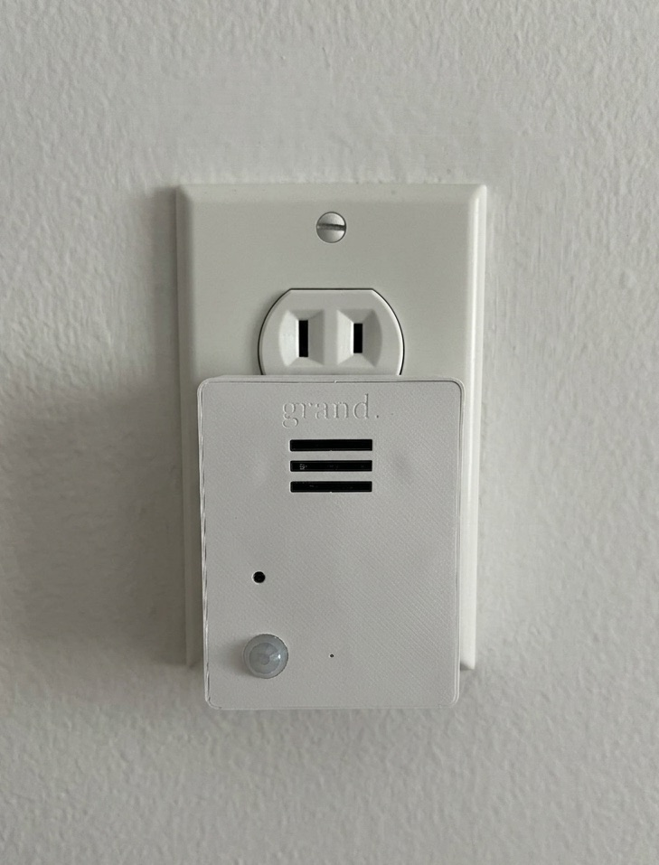
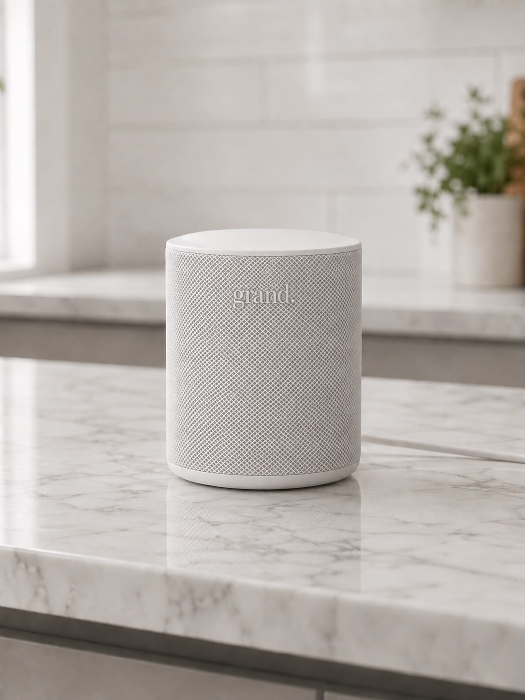

Pendants & watches
Only work if they’re charged and worn consistently — which means not in the shower, not overnight, not on the bad days.
Care at home
A small hub and a few discreet sensors to flag when something’s off — no cameras, no wearables, nothing to charge.
The worry
Your parent lives on their own, and they intend to keep it that way. But you can’t help but worry that something might happen and you can’t be there every day.
Pendants & watches
Only work if they’re charged and worn consistently — which means not in the shower, not overnight, not on the bad days.
Call-for-help buttons
Not only do they make your loved one feel old, they’re useless if they can’t be reached.
Cameras
Watching your own parent in their home isn’t safety — it’s the end of their privacy. And you can’t monitor a feed constantly.
The setup
There’s a better way to know they’re okay. A small hub and a few sensors. No cameras, nothing to wear, nothing to charge.

The sensors
A few small sensors that plug into any outlet and connect to the hub over Wi‑Fi. They use motion and audio detection to make sure your loved one is safe and healthy.

The hub
Processes the data the sensors send and pings you if something is off. No audio is ever sent to the cloud, so your parent won’t feel like their privacy is being compromised.
How it works
Grand uses motion and audio signals to build a picture of your parent’s normal routine, then watches for changes that might mean it’s time to check in. Grand can also notify you if something more serious may be happening, so you have peace of mind without putting a camera in the home.
Morning routine
Grand can recognize when a wakeup time seems significantly different from the usual routine.
Kitchen use
Grand can identify the audio and motion signals that typically accompany meal time.
Restroom routine
Grand can keep tabs on trips to the restroom without invading privacy with a camera.
Emergency indicators
Most importantly, Grand can notice sudden changes in motion or audio activity that may indicate an emergency. It can reach out to your parent to confirm they are okay before letting you know.
Caregiver experience
Open the app and you see today at a glance: is the day broadly normal, or is there something worth a check‑in? No raw data to decode, no live view into the home — just a clear read on how your parent is doing.
See at a glance whether the day broadly looks like your parent’s normal routine.
Unusual inactivity or a shift in the pattern is surfaced — without exposing a live view into the home.
The moments that matter are framed clearly and sent to you, tuned to avoid false alarms.
Your parent barely notices it’s there — no screens to learn, nothing to wear.


Early access